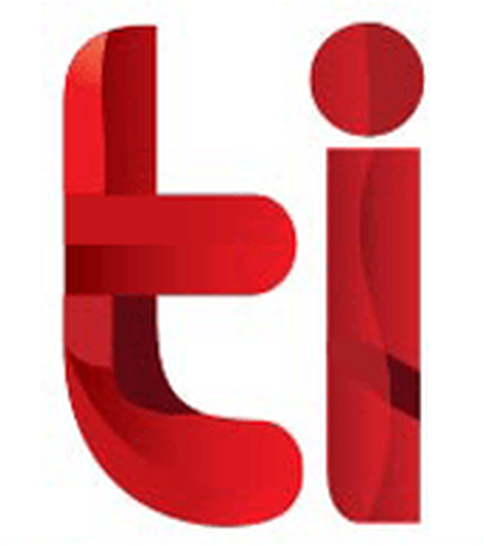
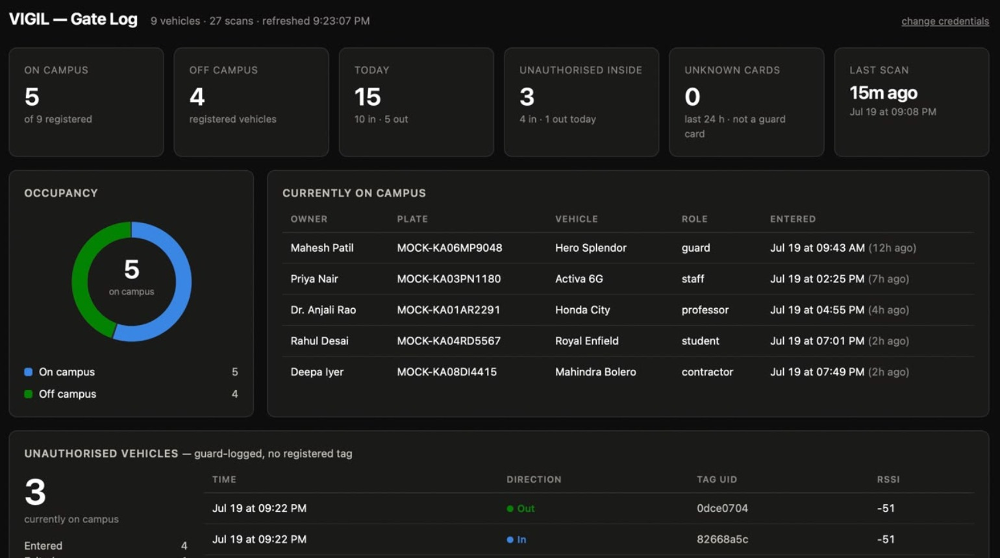
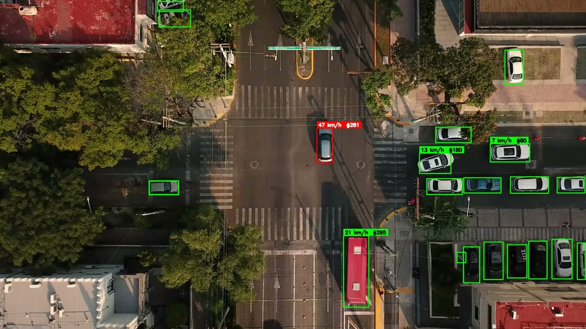
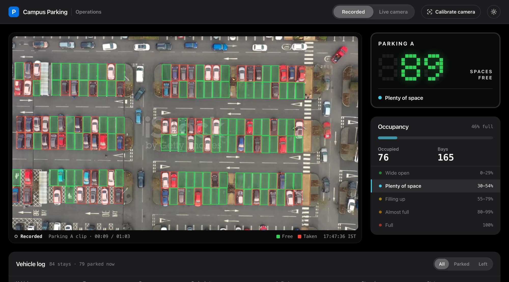

| Stage | Median |
|---|---|
| Card detect and UID read | 3.51 ms |
| AES-256-GCM encryption | 0.07 ms |
| LoRa transmission | 77.97 ms |
| Sent → ACK verified | 520.11 ms |
| Tap → confirmed (end to end) | 604.43 ms |

| Speed chain | Median error | Parked cars ≥ 5 km/h |
|---|---|---|
| No correction | 3.3 km/h | 54% |
| Drift corrector | 2.5 km/h | 32% |
| Motion compensation | 0.6 km/h | 5% |

| Status | Share of bays filled |
|---|---|
| Wide open | 0–29% |
| Plenty of space | 30–54% |
| Filling up | 55–79% |
| Almost full | 80–99% |
| Full | 100% |